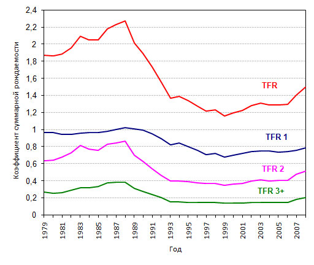

http://politrussia.com/society/minzdrav-izobrazhaet-borbu-972/
Андрей Борцов (Warrax)
Бороться с алкоголизмом нужно правильно
Сообщают, что в начале 2017 года нас ожидает очередная борьба с алкоголем, Минздрав разработал новую, свежую концепцию и весь в ожидании окончательного согласования документов:
«Близкий к министерству источник поясняет, что краеугольный камень всей концепции лежит в грамотной визуализации её идей. Речь о социальной рекламе, продвигаемой на телевидении и в соцсетях».
Пропаганда будет вестись, как сообщается, с упором на школьников и студентов «в рамках учебного процесса», также особое внимание будет уделено женским консультациям: «многие беременные недооценивают риски употребления алкоголя для ребёнка и систематически выпивают».
Честно говоря, сразу же возникает вопрос: как именно будет осуществляться заявленное в рамках учебного процесса? Конкретно? «Дети, сегодня я вам с 100500-й раз напоминаю, что алкоголизм — это плохо»? «Студенты! Сегодня, после сдачи экзамена, — ничего крепче кефира»? Что касается «недооценки риска алкоголя при беременности» — так это незнание биологии на школьном уровне, плоды реформ образования с целью уничтожения оного; и надеяться на «запомнят, не понимая, и будут соблюдать» очень наивно.
Но, может, специалистам виднее? Ссылаются на статистику:
«…в 2017 году россияне должны пить не больше 11 литров чистого спирта на душу населения, в 2018-м — не больше 10,6 литра. Для сравнения: в 2015-м, по данным Федерального медицинского исследовательского центра психиатрии и наркологии Минздрава РФ, мы пили по 11,5 литра».
Тут важно понимать, что статистики «самой по себе» не существует, и сравнивать можно лишь полученные по одинаковым методикам данные. Рекомендую подборку материалов на тему мифа «русские очень много пьют», здесь приведу два тезиса касательно такой статистики: во-первых, в разных странах по-разному определяется, что считается алкогольным напитком — в РФ это всё, что крепче кваса и кефира, то во многих странах отсчёт идёт от 4-5%, а про Никарагуа пишут, что даже 12%, но данные я не проверял. Во-вторых, главное всё равно другое — знаете, откуда все приводят жуткую статистику про 18 литров спирта на человека в год? Первоисточник — постановление Онищенко как главного государственного санитарного врача РФ «О надзоре за алкогольной продукцией» от 29.06.2009:
«Потребление учтенного алкоголя на душу населения в стране выросло с 5,38 литра абсолютного алкоголя в 1990 году до 10 л в 2008 году или в 1,8 раза. Однако реальное душевое потребление алкоголя с учетом оборота спиртосодержащей продукции, в том числе парфюмерно-косметическая продукция, товары бытовой химии и другие виды продукции, в России составляет около 18 л».
«В том числе товары бытовой химии», Карл! Пугалка про 18 литров — это не потребление внутрь, а вообще — включая протирку мебели. И даже без этой цитаты подозрение «что-то тут не то» должно возникать сразу, стоит хоть чуть подумать: 18 литров спирта — это 45 бутылок водки в год в среднем, включая старушек и новорожденных младенцев. Смотрим на частоту употребления спиртного (данные за 2002 год, более свежих не нашёл):

Как-то картина не состыковывается, не так ли? Особенности статистики мы уже знаем, а психологически тут точно такой же эффект, как боязнь самолётов, хотя вероятность погибнуть в автокатастрофе существенно выше. Просто это «привычно». Так и с алкоголем: все иногда видят алкоголиков и обращают на них внимание (особенно если есть в семье), поэтому и «ужос-ужос».
Разумеется, я не хочу сказать, что алкоголь вообще безвреден и т.д., но в заблуждениях нет ничего хорошего, а врать — так вообще плохо. Бороться с алкоголизмом надо, но именно с алкоголизмом, как и любой зависимостью, а не алкоголем!
Давайте посмотрим на последствия предлагаемой антиалкогольной компании: «По подсчётам аналитиков, за два года алкогольная отрасль может потерять порядка 286 млрд рублей». А это — уже интересно: нужна ли нам такая экономическая диверсия? Давайте вспомним про деятельность Горбачёва на ниве борьбы с алкоголем. Какую роль в истории России он сыграл — все знают; и свою компанию он начал через два месяца после вступления в должность, практически сразу. В результате государство недополучило около 60 млрд рублей (ещё советских полновесных) в бюджет (не считая вырубки виноградников и т.д.), а отношение к государству становилось всё более негативным: нельзя же над людьми так издеваться! Многочасовые очереди с регулярной переписью, чернильными номерами на руках и т.д., в которых стояли даже непьющие, поскольку ценность бутылки как презента в таких условиях резко возросла.
Впрочем, нагнетание социальной напряжённости в «перестройку» было не единственной целью. Первично целью был вывод производства и реализации алкогольной продукции в теневую экономику, создание подпольной сети изготовления и распределения алкоголя по спекулятивным ценам. Помните, как в США мафия образовалась именно на почве бутлегерства? Затем алкогольная мафия легализовалась, а госмонополию на алкоголь отменили — в результате алкогольные доходы перешли от государства к эффективным собственникам.
И не надо «забывать» про суррогаты, которые стали пить взамен нормальной продукции — и даже если кто не отравился до смерти, здоровья в долгосрочном периоде это не добавляет в любом случае. Также недопустимо «забывать» про рост количества наркоманов, которые в СССР встречались по большей части в анекдотах. Наркомания ГОРАЗДО хуже алкоголя, вполне вписанного в русскую культуру (и не надо путать с маргинальным бескультурием).
Часто говорят о том, что именно борьба Горбачёва с алкоголем способствовала повышению рождаемости, но и это — лишь хитрая демагогия. Смотрим на график (TFR (Total fertility rate) — коэффициент суммарной рождаемости, TFR1, TFR2, TFR3+ — суммарные коэффициенты рождений первых, вторых и третьих и следующих рождений соответственно):

Подробно я писал на тему у себя в ЖЖ, процитирую фрагмент:
«…видите пик 1983-го года? Без всякого запрета спиртного. Так что утверждение "рождаемость повысилась именно из-за горбачёвской борьбы с алкоголем" сомнительно. В конце концов, как вы это себе представляете? Культурному человеку, иногда выпивающему коньяк, это мешало заниматься сексом? Или же забулдыга, который раньше закладывал за воротник ежедневно и к сексу относился спустя рукава на пол-шестого, прекращал кушать водку из-за её отсутствия, днём грустно мотал БФ на сверло, и вечером у него появлялось желание и потенция в гигантских количествах?».
Post hoc non propter hoc. Показательно, что количество рождения третьих детей плавненько росло вплоть до 1988 года безотносительно количества продаваемого алкоголя, поскольку в СССР желающие могли себе позволить 3-х детей: уровень жизни медленно, но рос. А вот после уничтожения Советского Союза… на графике видно наглядно.
Извиняюсь за некоторое отклонение от темы, но показать мифологичность тезиса «рождаемость повысилась именно из-за запрета алкоголя» было необходимо.
Спиртное давно и прочно вписано в культуру, и запретами тут ничего не добиться.
Негативный опыт антиалкогольных компаний обширен: ни в одной стране стратегически это ни к чему хорошему ещё не приводило. А тут снова: а давайте поездим людям по мозгам, и в результате бюджет не досчитается 286 миллиардов рублей! Это же на благое дело!
Нет, неуважаемые господа, не надо прикрываться слезинками детей алкоголиков. Всё просто: если бы вы действительно бы радели о здоровье народа и благе государства, то вы предлагали бы в первую очередь следующее:
1. Запрет на «слабоалкогольные коктейли», которые состоят из спирта и химии, зато типа сладенькие и пользуются популярностью у подростков;
2. Наведение порядка на рынке пива, запрещение эрзацев, переключение на крафтовые мини-пивоварни (заодно подзаработают отечественные предприниматели, а не иностранные владельцы пивозаводов);
3. Возвращение госмонополии на производство алкоголя со строжайшим контролем фальсификата;
4. Организация сети пабов, рюмочных и т.д. с доступными ценами (при соблюдении качества), чтобы было именно где культурно посидеть, а не пить на улице из-за нездорово высоких цен.
Дополнительно к этому, если по-хорошему, требуется уверенность в завтрашнем дне, которая при капитализме невозможна. А без этого люди не выпивают на радостях, а зачастую просто пьют от безысходности.
Нельзя решать сложные, комплексные проблемы методом «а вот тут в одном месте поправим, и всё будет гораздо лучше». Такие предложения — в лучшем случае попытка освоить бюджет (не обязательно напрямую, скажем, в данном случае дополнительного финансирования не требуют, но хотят взять из уже выделенного на госпрограмму «Развитие здравоохранения»), не думая о последствиях, но может быть и прямая диверсия «лишим бюджета 286 миллиардов рублей».
Но суть, как и во времена Горбачёва, не только в экономике. Благодаря ему произошла передача доходов от продажи алкоголя в частные руки, а сейчас-то что может произойти?
Не «может», а уже происходит. Обратите внимание — аналогично «борются» с курением: запрещая открытые продажи, но не ратуя за повышение качества. То, что большинство курит, т.е. сигареты — это даже не табак, а химические смеси с табачными отходами.
Запреты алкоголя и табака, которые вписаны в нашу культуру, и при употреблении в меру качественных продуктов имеют минимальный вред, сопровождаются компанией Запада на легализацию «лёгких» наркотиков — мол, у марихуаны нет привыкания, как у табака, а водка более опасна, чем героин (реально, встречал такое в публикациях), а также продвижением концепции «наркоманы — это всего лишь больные, а не преступники». Я кратко раскрывал эту тему в статьях «Наркотики России не нужны» и «Героин в США дешевле табака: налетай!», так что отсылаю к ним. И вот это «дополнение» всегда стоит учитывать, когда сталкиваешься с антиалкогольными и антитабачными инициативами, не содержащими концепции улучшения качества и культуры потребления соответствующих продуктов. Причём ни одной такой компании я не припоминаю в принципе.
30.06.2016